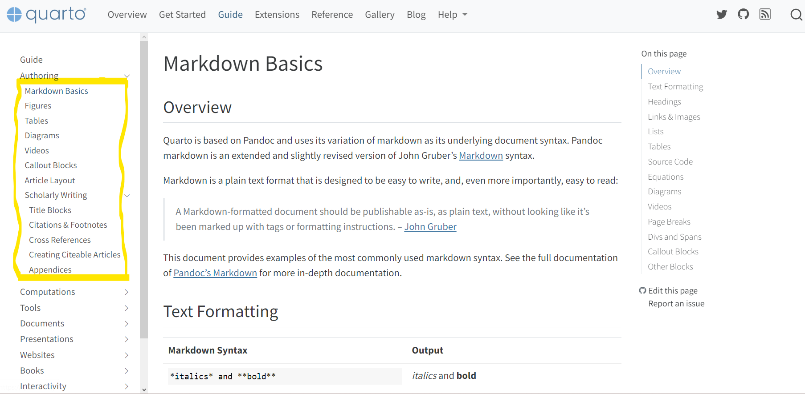

Beauti notebook

Just access the link, follow the instruction!
It is typical to have an unsatisfied result when execute in Jupyter since it use a different set of render engine. Try nbdev_preview for better interaction.
The documentation of crossref is perfect except it did not mention cross notebook reference. As we are using Quarto to code, modulized packages should have strong, rigorous structure. The following sections got you covered.
Crossref
read the code to follow
For example, a link like this would direct you to Directives, while this link would get you to Directives/Cell_execution (notice in 01_directives.ipynb, there is a line mark the section ### Cell execution {#sec-cell-execution})
Inconclusion, the formula is simple: 1. Add {<section_name>} to the file to redirect to 2. Add <file_name>#<section_name> in the hyperlink to redirect from
Also we used absolute path in this tutorial, feel free to use relative path like ../abc.ipynb
Callout
read the code to follow
Some common use cases of callout
Note that there are five types of callouts, including: note, warning, important, tip, and caution.
This is an example of a callout with a caption.
This is an example of a ‘folded’ caution callout that can be expanded by the user. You can use collapse="true" to collapse it by default or collapse="false" to make a collapsible callout that is expanded by default.